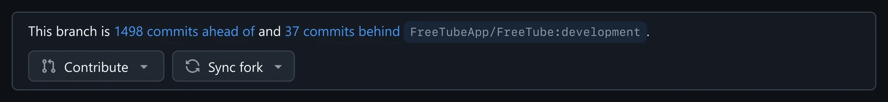
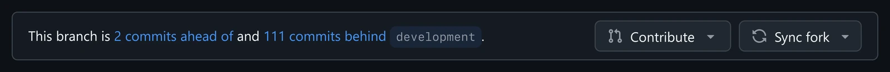
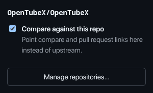

What changes
Same GitHub, same design — only the repository it talks about is yours. The commit counts are recomputed against your default branch, so they are the numbers that actually matter to you.
Before

Counted against upstream, and every link here opens a pull request against upstream.
After

Counted against your own default branch, and the links stay in your repository.
One click per repository
Open a repository, click the toolbar icon, done. Nothing happens on repositories you have not enabled —
forks you actually contribute upstream from keep working exactly as before. Add a whole account at once
with an owner/* pattern in the options page.

Everything it fixes
Every entry point
The Contribute menu, "Compare & pull request", the commits-ahead link and /pull/new/
links all land in your repository.
Your default branch
A branch is compared against your default branch, not upstream's — the diff you were looking for.
Nothing leaves your browser
No accounts, no tokens, no third-party requests, no telemetry. It reads github.com pages and stores your repository list — that is all.
Opt in per repository
Toggle from the toolbar, or list repositories as owner/repo and owner/*.
Everything else on GitHub is untouched.